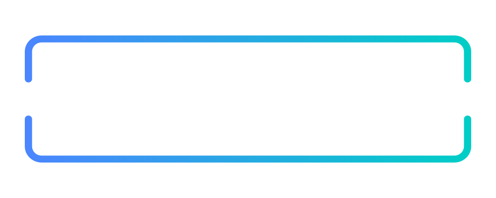

Recommender demo
Light mode
POLICY-DRIVEN AGENTIC RED TEAMING
From policy to guardrail recommendation.
Run policy mapper
→
Run all
Reset
Pre-loaded use case
View use case description
USE CASE
SYSTEM
POLICY
MODELS
USE CASE
✕